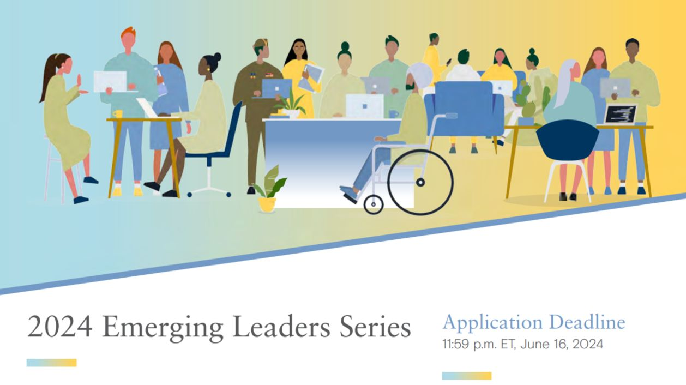
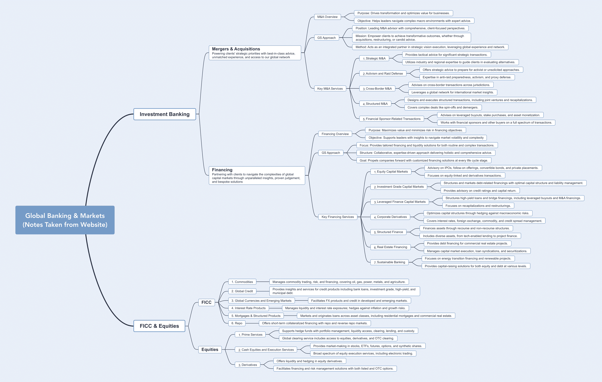
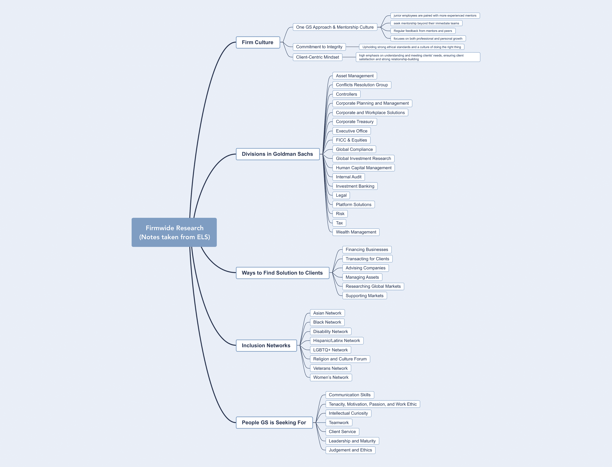
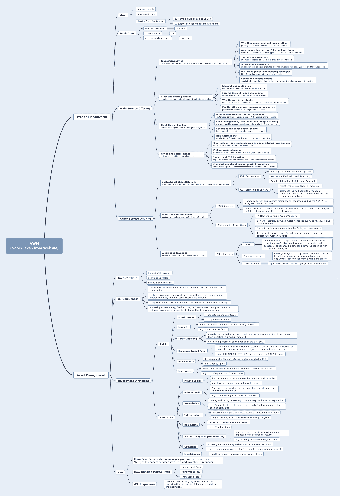
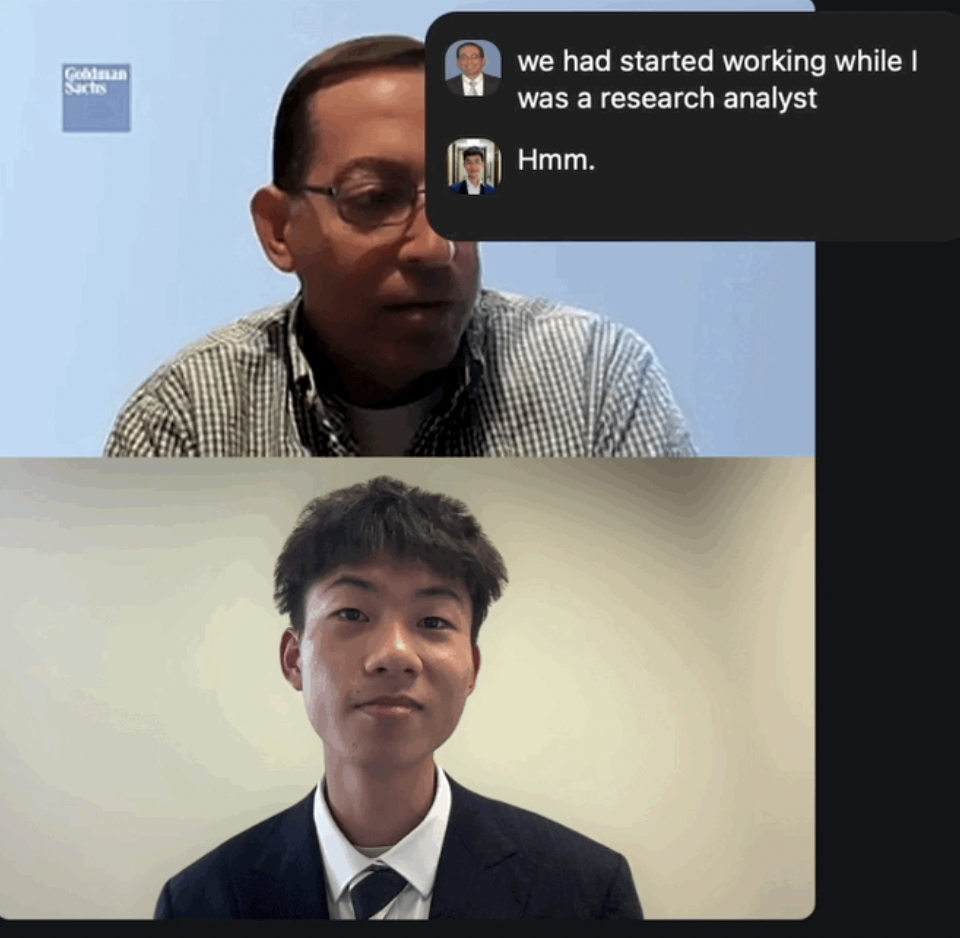

Goldman Sachs Emerging Leaders Series — Experience & Insights
I’m honored to be selected as a participant in the Goldman Sachs Emerging Leaders Series, a four-month leadership development program led by Goldman Sachs senior managers with a three-day in-person experience at the firm's New Jersey headquarters.
Throughout the program, I also had the opportunity to network with the Global Investment Research (GIR-GS Sustain) team that focuses on global markets, sustainable finance, and innovation strategy. This experience deeply strengthened my interest in the role capital plays in accelerating the energy transition while maintaining strong investor returns.
Exploring the Intersection of AI & Energy Economics
My academic and project work sits at the intersection of AI, sustainability, and finance. As electrification expands and data centers surge, I’ve grown increasingly curious about how technology will reshape global energy markets and how investors can capture long-term alpha in this shift.
I’ve studied research from Goldman Sachs on energy capital flows, grid stress from AI-driven compute demand, and the rising need to scale storage, transmission, and clean baseload generation. This has become a core intellectual focus in my future investment career.



When Capital Meets Climate Innovation
I had the opportunity to connect with Brian Singer, Global Head of GS SUSTAIN under Goldman Sachs Global Investment Research. Our discussion centered around sustainable investment frameworks, capital allocation discipline in decarbonization, and AI-driven energy demand.
Below are the core themes I prepared ahead of our discussion, which guided a thoughtful conversation about the future of sustainable investing:
- The evolution from traditional energy coverage to leading sustainable investment research
- Why returns discipline is essential to scaling green capital deployment
- The importance of balancing reliability, affordability, and decarbonization
- How electrification, AI, and grid expansion will define the next decade of energy innovation

Deep-Dive Q&A: Exploring Energy, AI, and Sustainable Alpha
Reflection & Next Steps
Finance × Sustainability
I learned that sustainability investing only works when financial fundamentals are strong — impact must scale with returns.
AI + Energy
I’m excited about the rising power needs of AI and electrification. Storage, grid software, and transmission will be core research areas for me.
Private Capital
Private markets can accelerate decarbonization where public funding is slow. I plan to study how private capital fills this gap.